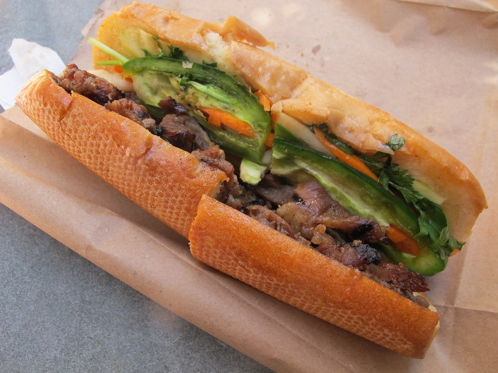
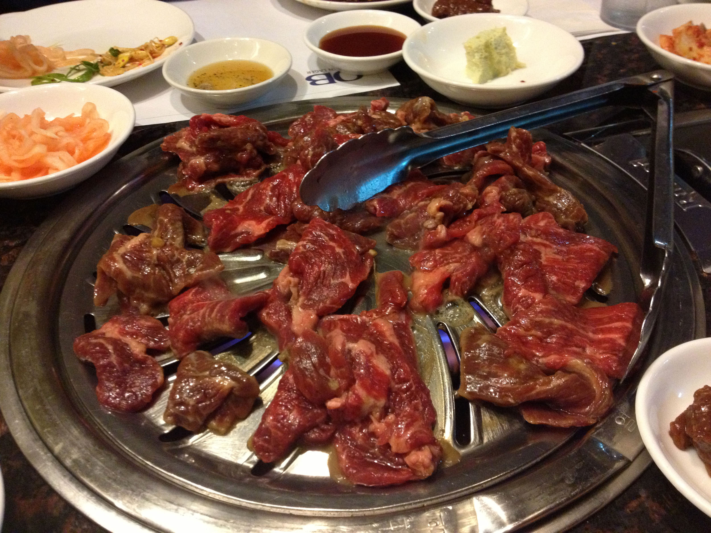
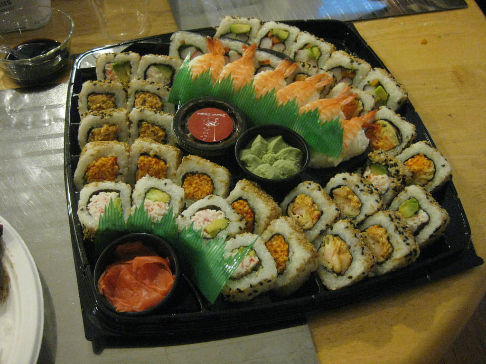

Now that you have travelled all over the city visiting these great views, you must be hungry!
Here are some places you can visit to get a quick bite:
Local Pizza Shops
There are local, freshly made pizza stores every few blocks in the city! Would highly recommend visiting these rather than the pizza restaurant chains, since you can get those elsewhere. Nothing beats fresh pizza that you see them make right in front of you, all done within 15 minutes.

Banh Mi Saigon
If you are interested in Vietnamese sandwiches, this is one of my personal favorites that visit every time I am in the area! It is very well known, so expect to wait on line to order one. My favorite is the pork Banh Mi, however there are many different variations on the menu.
Any Fast Food Chain
If you want to resort back to things you have previously had rather than trying something new, there are restaurant chains you definitely have heard of within a 5 minute walking distance from anywhere in the city.
Here are some places you can sit down and grab a full meal:

Jongro BBQ
If you are a fan of Korean BBQ (various cuts of meat cooked on a grill right in front of you, on your table), this is one of my favorites that I visit every time I am in the mood for KBBQ. I would highly recommend making a reservation if you go on the weekends, or you will have to wait half an hour for a table. This is a great place to visit if you go as a group!

Kikoos
This is an AYCE (All You Can Eat) Sushi place, serving fresh sushi and other various Japanese dishes. This is my go-to for sushi when it is a craving. While there are many AYCE sushi places in the city, this is my favorite because of its amazing service and the fact that you order on a tablet and then the food comes to your table.